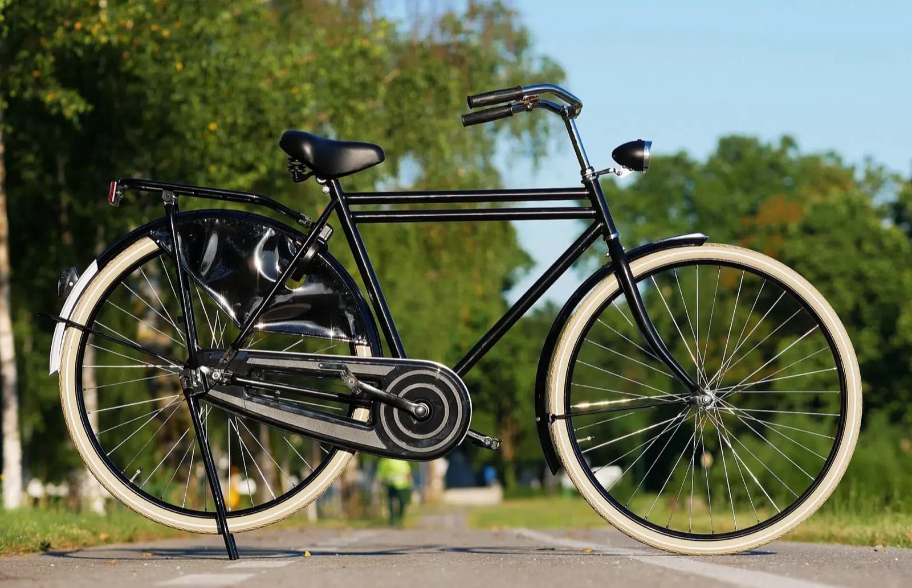
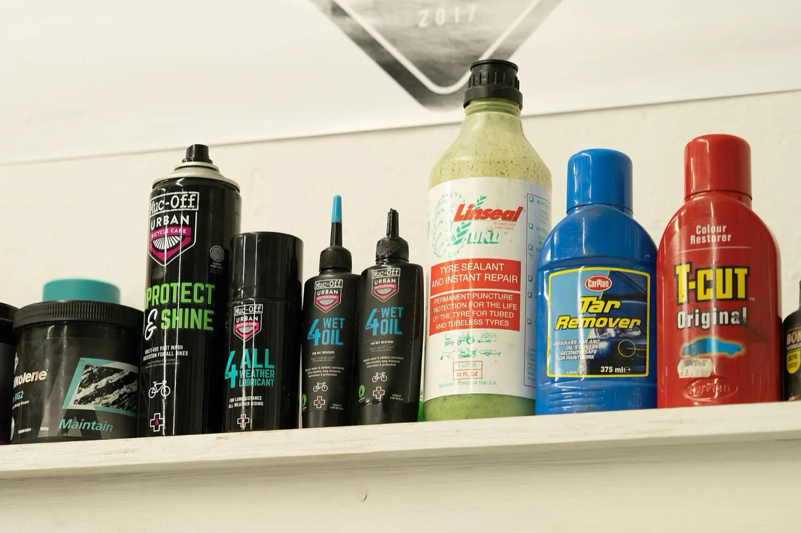
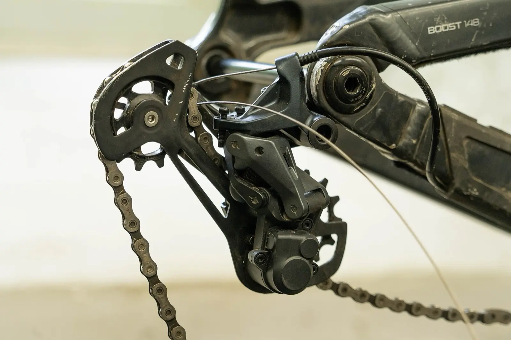

Prices
Job ticket
Job#0142
BikeHybrid, blue
WorkBasic tune-up
Quote£45
Ready1–2 days
Labour only. Parts are always confirmed before we fit them.
Quick jobs
Services
Parts are charged separately. Turnaround times stretch a little in the spring rush, March to May. We always tell you the real one when we quote.

Drop
Bring the bike in any time we're open, or book a collection slot. Tell us what feels wrong, or nothing at all.

Quote
A mechanic looks it over and texts you a price and a realistic ready-by time, normally within a couple of hours. Nothing happens until you reply yes.

Collect
We text again the moment it's ready. Come in, settle up and roll out. Most jobs come with a two-week check-back if anything needs a tweak.
Hours and location
- Monday
- Closed
- Tuesday – Friday
- 9:00 – 18:00
- Saturday
- 9:00 – 17:00
- Sunday
- Closed
14 Foundry Lane
Bristol BS2 0QY
0117 496 0198
Street parking on Foundry Lane, and a rack for customers just inside the workshop door.
Frequently asked
Do I need to book, or can I just drop in?
For punctures, adjustments and anything quick, just drop in during opening hours. For a full service or e-bike work, booking a day ahead means we can turn it round faster.
How long will my repair actually take?
Punctures and adjustments are usually done same day. Tune-ups take 1–2 days, full services and e-bikes 3–5 days. It stretches a little in the March–May rush, but we'll give you a real date when we quote, not an optimistic one.
Do you work on e-bikes?
Yes, most hub and mid-drive motors. Some manufacturers lock battery diagnostics to their own dealers, so for a handful of brands we can service everything except the battery itself. We'll tell you upfront if that applies to yours.
What if I don't know what's wrong with it?
Drop it off and describe the symptoms as best you can. “Clicks when I pedal hard” is plenty. Diagnosis is free and comes with a no-obligation quote.
Do you sell new bikes?
No, we're repair and servicing only. Ask in person and we're happy to point you toward shops nearby, or a decent secondhand frame if that's more your budget.
Can you collect my bike?
Yes, within about 3 miles of the workshop, for a flat £5. Mention it when you book and we'll arrange a time.
Book a service
Fill this in and we'll text you a time to bring the bike in. This is a demo form, nothing is sent anywhere.